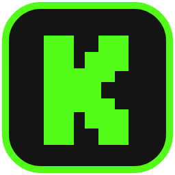
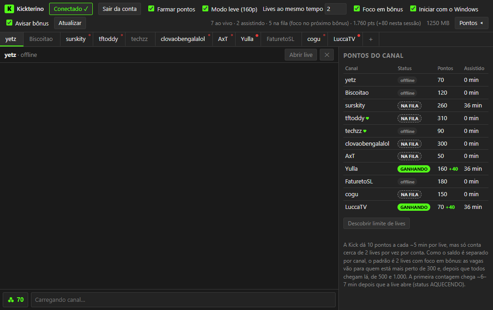

Foco em bônus
As vagas vão para os canais mais perto de 300 pontos, depois 500 e 1.000. Assim você compra bônus mais cedo.

KickterinoAcompanhe várias lives em abas e deixe 2 delas acumulando pontos em segundo plano para comprar seus bônus no PokeIdle.
Grátis e de código aberto. Windows 10 ou 11. Todas as versões

As vagas vão para os canais mais perto de 300 pontos, depois 500 e 1.000. Assim você compra bônus mais cedo.
As lives ocultas rodam em 160p, sem som, imagens ou anúncios.
Fica na bandeja, inicia com o Windows e reabre as lives sozinho depois de uma queda.
Acompanhe os streamers parceiros, envie mensagens e veja os resgates, como no Chatterino.
Veja saldo, ganho e status de cada canal, e abra a loja direto pelo app.
Receba uma notificação quando um canal alcançar 300, 500 ou 1.000 pontos.
Baixe só por este site ou pelo GitHub oficial. Instaladores enviados em grupos ou por outras pessoas podem ter sido alterados.
Nos testes, a Kick contou cerca de 2 lives por vez por conta, rendendo cerca de 220 pontos por hora. Abrir mais lives não aumentou o ganho.
Não. Os aparelhos da mesma conta disputam as mesmas 2 vagas com o app.
Não. Pode minimizar ou fechar a janela: ele continua na bandeja, perto do relógio. Para sair de vez, clique com o botão direito no ícone e escolha Sair.
Clique no ícone de pontos ao lado do chat para abrir a loja do canal. A compra é sempre feita por você.
Por enquanto, só no Windows.